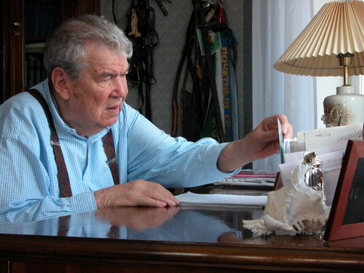
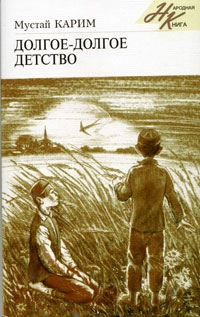
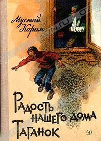

Мустай Карим – детям

Мустай Карим – автор более ста поэтических и прозаических сборников, свыше десяти пьес. Его произведения вошли в золотой фонд башкирской литературы и театра.
Классикой детского чтения стали повести "Радость нашего дома" (1951), "Таганок" (1966), "Батя Ялалетдин". Популярна автобиографическая повесть "Долгое-долгое детство" (1976), по которой был снят художественный фильм.


В БЕРЁЗОВОМ ЛЕСУ
Рассказ
Недалеко от нашей деревни – большой берёзовый лес. Бывать в этом лесу очень приятно. Там поют птицы, летают бабочки, пестреют цветы, растут грибы, зреют ягоды. В один из летних дней, когда солнце поднялось высоко, Альфия взяла корзинку и пошла в лес. На голове у неё белая шапочка, и поэтому не видно крас¬ной ленты в волосах. Может быть, она и не завязывала её?
Вам, наверное, хочется заглянуть в её корзинку и узнать, что же там есть. Пока что ничего нет. В лес все идут с пустыми корзинками. В корзинку лучше заглянуть, когда девочка пойдет из леса домой. Вот тогда и можно будет там кое-что увидеть.
По дороге Альфия заметила красивую бабочку с красными крылышками. Бабоч¬ка порхала, не спеша перелетала с цветка на цветок. Казалось, стоит протянуть руку — и поймаешь. Альфия совсем близ¬ко подошла к бабочке, но та вспорхнула, и пришлось опять бежать за ней.
Бабочка села на синий колокольчик и, вдруг, заговорила тоненьким голоском:
— Девочка, ты меня не трогай. Я ро¬дилась только сегодня утром. Мне хочет-ся порезвиться, поиграть вдоволь. Понравится ли тебе, если начнут гоняться за тобой, когда ты играешь?
Сказала бабочка такие слова и поле¬тела дальше. А удивленная Альфия задумалась и не стала догонять её. Ну что же, разве в лесу кроме бабочки нет ничего интересного? Вокруг столько красивых цветов. Можно сорвать любой, какой только хочешь: красный, белый, голубой. Альфия решила набрать целый букет и протянула руку к красному цветочку, который только что распус¬тился. Она уже схватилась за стебелёк и готова была сорвать цветок, как вдруг он заплакал:
— Ой-ойо-йо! Как мне ножку больно! Что же ты так хватаешь? Отпусти!
Альфия отдёрнула руку, сама близко-близко наклонилась к цветку и на лепест-ках увидела капли. То были слёзы. Цветок не переставал плакать:
— Я ведь еще совсем маленький, толь¬ко что распустился. А ты дерёшься. А хорошо тебе будет, если так больно дёрнуть?
Оставила Альфия цветок и скорее пошла дальше. Шла она, шла и под развесистым деревом увидела большой гриб. Девочка решила взять гриб и уже при¬тронулась к нему, как вдруг услышала тихий скрипучий голос:
— Кто это трогает меня? Кто беспокоит? Шляпку мою, говорю, шляпку попор¬тишь... А хорошо тебе будет, если нач¬нут мять твою шляпу?
Альфия быстро отдёрнула руку. А гриб кряхтел и вздыхал:
— Я уже состарился, еле стою, а ты помяла мою шляпку.
Он, видно, рассердился и так начал раскачиваться, что и вовсе свалился.
Альфия очень удивилась всему, что она услышала от бабочки, цветка и старого гриба. Она решила уйти домой и вы¬шла на полянку. Смотрит, а там столько спелых ягод земляники мелькает в траве, что у неё глаза разбежались.
Тут самая большая земляника повер¬нулась своим красным бочком к ней и заговорила:
— Что ж ты, девочка, стоишь? Почему не собираешь нас?
Альфия молчала. А земляника ласковым голосом продолжала говорить приятные слова:
— Мы уже совсем созрели и скоро начнём осыпаться. Ты собери в свою корзинку побольше ягод. А мама твоя сварит из них варенье, сделает пастилу. Когда наступит холодная зима, соберётесь вы всей семьёй за столом и будете пить чай с вареньем. Может быть, тогда по-хорошему вспомните лето, нашу лесную поляну, цветы, которые росли рядом с нами, и бабочек красивых вспомните. Собирай ягоды! Мы ведь дети солнца и земли! В нас сила земли, тепло солнца...
Вначале Альфия рвала ягоды очень робко. Потом осмелела. Казалось, ягоды сами прыгали в её корзинку. Не успела она оглянуться, как корзин¬ка наполнилась до краёв.
Побежала она домой и рассказала маме обо всём, что с ней при¬ключилось, и что говорила ей земляника, Маме очень понравились советы землянички, она все сделала, как сказала мудрая ягодка: сварила варенье, приготовила сладкую пастилу.
И вот зимой, в один очень холодный морозный вечер, когда вся семья собралась за столом и пила чай с душистым земляничным вареньем, папа Альфии сказал:
— Как хорошо! Во всем доме запахло летом.
И Альфия вспомнила ласковое лето и бабочку, и цветы, и грибы, и земляничку.
Хорошо летом в лесу!
СКВОРЧОНОК
Рассказ
В нашем скворечнике, который висит на высоком шесте, скворцы и в этом году вывели птенцов. Их пятеро. Когда скворчиха прилетает, чтобы покормить их, пять птенцов её сидят, широко раскрыв свои клювы, похожие на маленькие кошелёчки с жёлтой каёмочкой. Четверо птенцов ведут себя вполне прилично. Каждый терпеливо дожидается, когда дойдет его очередь. А пятый птенчик очень нетерпеливый. Стоит ему увидеть свою маму, как он наполовину высовывает¬ся из оконца скворечника и начинает гром¬ко кричать. Будто на всем свете кроме него никого нет. Целые дни со скворечника не спускают взгляда две пары глаз. На крыльце сидит Альфия. Она, не отрываясь, смотрит на скворечник. А другие глаза кошкины. Кошка лежит на крыше и притворяется, будто спит.
Всё, что думает, Альфия высказывает вслух:
—Эх, свалился бы этот озорной птен¬чик, я бы унесла его домой и покормила пшеном.
А кошка смотрит и молчит. Поэтому очень трудно узнать, о чём она думает. Может быть, она смотрит просто так, от нечего делать...
Озорной птенец ведёт себя всё нахаль¬нее. Стоит матери немного задержаться, как он тут же вылезает из скворечника, вытягивает шею и начинает кричать — звать маму. Но разве скворчиха может так быстро вернуться? Ведь она не успела ещё сделать всех своих дел.
А этот непутёвый совсем вылез из скворечника и уселся на маленьком выступе перед оконцем.
Неизвестно, что он собирался делать: не то отряхнуться, не то взмах¬нуть крылышками. Но вдруг пискнул и кубарем полетел вниз. А кошке только этого и надо было. Она тут же прыгнула с крыши на землю. Но Альфия проворнее: быстро подбежала к скворчонку и подняла его. Как раз в это время прилетела скворчиха-мама. Она с громким криком на¬чала кружиться над самой головой Альфии, касаясь своими крыльями её волос и плеча. Хотя птенчик был непослушным и свалился из гнезда по своей вине, маме всё равно было жаль его, и она не хотела, чтобы его унесли. Птичка кидалась из стороны в сторону, громко кричала, но Альфия не понимала её языка и не знала, чего она хочет. Ведь Альфия спасла её птенчика от кошки.
Зажав в руке птенца, девочка убежала домой. А скворчиха ещё долго кричала и кружилась над крыльцом...
Вбежала Альфия в комнату и радостно крикнула:
— Мамочка, я поймала скворчонка, он из гнезда вывалился, дай мне,
пожалуйста, пшена, я покормлю его.
А мама совсем не обрадовалась и сказала:
— Иди, вынеси его сейчас же, может быть, скворчиха подберёт его.
— Нет, нет, нельзя выносить, — возразила Альфия, — ведь там, на крыше, кошка сидит.
— А ты прогони кошку...
Сколько мама ни говорила, Альфия не захотела расстаться с птенчиком.
— Птенец такой упрямый, он совсем не слушается своей мамы. Наверное, мама его уже не любит, — сказала Альфия.
— Ты ведь тоже не всегда послушная, а мы тебя не разлюбили, — от¬ветила ей мама. Скворчонок затих, он опустил голову набок и не захотел ни пшена поклевать, ни водички попить.
Альфия подумала, что птенчик заболел и решила полечить его. Она взяла пузырёк со своим лекарством от кашля, налила в маленькое блюдце и поднесла птенчику. Но тот даже головы не повернул. Ведь малыши не любят пить лекарство.
Мама Альфии была занята, она торопилась на речку за водой и, уходя, сказала очень строго:
— Сделай, что я тебе сказала! Вынеси птенца во двор, пусть мать его
заберёт!
Альфия ответила маме: „Ладно, сейчас". Но сама не торопилась вы¬полнить то, что велела мама. Ей очень хотелось посмотреть, как будет летать птенчик, и она стала подкидывать его. А птенчик раза два взмах¬нул крылышками и шлёпнулся на пол. Альфия так увлеклась своей затеей, что и не заметила, как пёстрая кошка влезла в окно и притаилась в углу. Кошка, не спуская глаз, следила за девочкой и птенцом.
Вот Альфия опять подбросила птенца, и он упал недалеко от кошки. Не успела девочка опомниться, как кошка бросилась к птенцу, схватила его и выпрыгнула в окно. Попробуй её поймать!
Когда мама вернулась с речки, Альфия молча сидела у окна. Мама ни о чем её не спросила. Она, наверно, думала, что дочь вынесла птенца, и он уже нашёл свою маму.
До самого вечера Альфия просидела у окна и была очень грустной. Когда она смотрела на скворечник, у неё почему-то из глаз скатывались слёзы.
Альфия рано легла спать, а ночью ей приснился такой сон: будто она очутилась в большом дремучем лесу и заблудилась. Вокруг воют волки, ревут медведи, кричат какие-то страшные птицы. Вот из-за кустов выскочи¬ла огромная пёстрая кошка величиной с телёнка и уставилась сверкаю¬щими глазами на Альфию. Девочке стало страшно, она вся задрожала и спряталась за большое дерево. Смотрит, а под деревом пищит малень¬кий птенчик. Кошка тоже увидела птенца и стала подкрадываться к нему.
Альфия не знала, что делать, но собрала все силы и громко крикнула:
— Брысь отсюда! Не смей трогать!
В это время с дерева её окликнула какая-то птица:
— Девочка, иди ко мне в гнездо. Я скворец, я не злая птица. Здесь тепло и хорошо. Когда Альфия поднялась на дерево, устроилась в гнезде, птица опять заговорила:
— У меня было пять птенцов, одного из них утащила злая девочка. А ты храбрая и добрая девочка. Завтра, как только взойдёт солнце, я отнесу тебя к твоей маме.
Сказала птица так, уложила девочку рядом со своими птенцами и при¬крыла мягким крылышком. Пригрелась Альфия, и ей стало тепло-тепло.
А птица старалась укрыть её ещё лучше, ещё теплее, и тут... Альфия проснулась. Она открыла глаза и видит: над ней склонилась мама и по¬правляет ей одеяло.
Альфия схватила мамину руку и прошептала:
— Мамочка, а птица сказала, что я девочка добрая.
ТУДА ИЛИ СЮДА?
Рассказ
Альфия тогда была ещё совсем ма¬ленькой.
И за то, что мама не разрешила ей сидеть на столе, она очень обиделась.
— Всё ругаете и ругаете, уйду я от вас, — сказала она папе с мамой.
— Иди, — ответили они.
— Уйду, — сказала Альфия.
Надела она ботинки, но завязать шнурки не сумела.
— Завяжите мне, — сказала девочка.
Мама завязала ей шнурки.
Теперь надо было одеться. Альфия подбежала к вешалке, но дотянуться до пальто не смогла.
— Достаньте мне пальто, — сказала она.
Подошёл старший брат, снял с вешалки пальто и подал.
Альфия бросилась к двери. Но достать до ручки двери не смогла.
— Откройте дверь! — крикнула она.
Папа открыл дверь и вышел вместе с ней на крыльцо. Альфия тихо побрела к воротам и вдруг остановилась. Она посмотрела по сторонам, потом обернулась к папе, спросила:
— А куда мне пойти? Туда или сюда?
— Не знаю, ответил папа. Постояла девочка у ворот, помолчала и медленно вернулась обратно.
ПЕТУШИНАЯ МЕЛЬНИЦА
Маленькая сказочная повесть
Пересказ Ильгиза Каримова
КУДА УЛЕТАЮТ ОДУВАНЧИКИ?
Была та чудесная пора, когда в тени одуванчики еще желтые, а там, где солнце пригрело, они уже белые, пушистые; подует ветер — и легкий одуванчиковый пух раз¬летается над зеленой травой. А вот кое-где два одуванчика — желтый и белый — стоят рядом, и белый (он ведь старше) рассказывает дружку, еще желтому и несмышленому, как он скоро отправится в далекое путешествие, нужно только дождаться хорошего попутного ветра. И впрямь случается — пронесется порыв ветра и, к большому удивлению желтоголового одуванчика, его старший друг, который только что рассказывал про будущее путешествие, вдруг исчезает. Выходит, он, дела не откладывая, уже от¬правился в дальнее странствие.
Вот и цыпленок Айбулат в день, когда исполнилась ровно неделя со дня его рож¬дения, решил узнать, куда же улетают одуванчики.
Он приглядел один белый одуванчик и вместе с ним стал ждать попутного ветра. Налетел ветер и понес перышки одуванчика.
Айбулат помчался следом...
Наступил вечер, и к петуху Йондозбаю прибежала пеструшка Суарбике. Он долго не мог понять ее кудахтанья, наконец с трудом разобрал: уже темнеет, а один ее цыпленок куда-то пропал!
— Куда пропал? — спросил Йондозбай.
— Куда, куда! — запричитала Суарбике. — Не знаю куда! Он стихи сочиняет.
— Стихи сочиняет... — задумался Йондозбай. — Дело непростое. Вот мы ходим,
зернышко, червячка в траве ищем. А поэты ищут рифму. Где он ищет?
— Йондозбай-агай! Откуда я знаю? Беги! Не стой! На тебя последняя надежда! —
снова запричитала Суарбике.
— Так-так-так! Лиса! Коршун! — забормотал петух. Он глянул в небо, коршуна
там не было. Значит, лиса?
И петух помчался в дальний конец огорода. Говорили, там порою шныряет лиса. Однако ни лисы, ни цыпленка там не оказалось. Два воробья, сидевшие на плетне, со¬общили, что тут никого и не было. И только тогда Йондозбай заметил, что уже темно и у него, как у всех кур и петухов, началась куриная слепота. Как же теперь попасть в родной курятник? Он забегал вдоль плетня в поисках лаза:
— Иди сюда, егет с улицы Серее! — услышал он.
По голосу петух узнал летучую мышь Ярканат. С некоторых пор тетушка Ярканат решила, что теперь она самая старая жительница нашего аула, и потому все остальные кляшевцы (кроме людей, конечно) для нее только «егет» или «сношенька». Йондозбай уже давно не был молодым егетом, но тут же побежал на голос.
— Заблудился? — спросила Ярканат.
— Куда? Где? Заблудился! Я! — залопотал петух.
Надо сказать, что у нашего петуха каждые пять минут случалась небольшая па-ника. Характер такой. Он немного побегал туда-сюда и спокойно рассказал, как все произошло.
— Цыпленок уже вернулся, — сказала Ярканат. — Не слышал разве, как Суарбике его встречала?
Ярканат не торопилась. Вот сгустятся сумерки еще немного, и можно лететь на охоту, а пока с удовольствием поговорит. Хотя и назвала она солидного уже петуха егетом, но относилась к нему с уважением. Во время ночной охоты она всегда послушивала: вот первые петухи, вот вторые, а вот и третьи, пора возвращаться. И самый громкий, самый боевой среди ночной переклички — голос петуха Йондозбая. Она гордилась, что они живут в одном хозяйстве: она с подругой совой Ябалак в старой бане, а он в курятнике неподалеку.
— Да, Йондозбай, большое у тебя хозяйство, — сказала летучая мышь. — И за каждым присмотр нужен.
— Все на мне!.. — развел крыльями Йондозбай. «Эх, бежать бы скорей домой!» — подумал он. Но — нельзя, пока старшая (или старший) сама не отпустит тебя. Так его в детстве учили. А наш петух не только самый голосистый петух в ауле Кляш, но и самый воспитанный.
— Ты самый старший среди кур, а я — во всем ауле, — сообщила Ярканат. — Но я тебя понимаю. Я-то одну себя кормлю, а на тебе такая орава!
— Да хозяйка вроде нас не обижает.
— Но была бы у вас петушиная мельница, никому бы не кланялись.
— Какая петушиная мельница? — удивился петух Йондозбай.
— А-а, так ты не знаешь, что за петушиная мельница? — обрадовалась летучая мышь. — Вот-вот, все вы одинаковы, что петух, что курица: память короче носа. Сей¬час расскажу!
И она поведала петуху историю, которую слышала еще в детстве. Свой рассказ тетушка Ярканат завершила такими словами:
— Никто уже не помнит, я помню. Последняя на свете осталась! — и тут же крик¬нула: — Скорее, сосед, беги, лиса подкрадывается!
Петух шмыгнул в лаз и припустил по тропке через огород. Летучая мышь про-неслась над землей и, насмешливо проверещав над крадущейся в траве лисицей Сарыкай, исчезла в сумерках.
Лиса подбежала к лазу и по привычке быстро все обнюхала. Поздно нюхать, петух уже был дома.
Сарыкай не упустила ни слова. Потому и не набросилась на петуха сразу, что хотела выслушать все до конца. Интересную историю рассказала старая трещотка. Очень интересную. Теперь надо только присматривать, как пойдут дела.
Вот так и получилось, что сначала цыпленок Айбулат решил узнать, куда улетают одуванчики. Затем петух Йондозбай отправился его искать. Потом летучая мышь Ярканат рассказала ему про волшебную мельницу, и, наконец, лисица Сарыкай под¬слушала их.
Вот только неизвестно, куда же улетают одуванчики?
ГЛАВНОЕ ПРАВИЛО КОТА МАЛАХАЯ
За старой баней в брошенной давным-давно телеге дремал рыжий кот Малахай.
«Как хорошо! — рассуждал он сквозь дрему. — Сначала я ленился дома. Потом на крылечке поленился — наскучило. Теперь вот в старой телеге ленюсь! Хорошо весной — ленись где хочешь! А зимой — только на печке, но и оттуда гонят. Мало того: хотят, чтобы я мышей ловил! А как мышку поймаешь? Она же на месте не сидит, за ней бегать надо, чтобы поймать. То ли дело сметана! Сидит в кувшинчике и никуда спрятаться не может».
Вспомнив про сметану, Малахай немножко расстроился. «Нельзя о неприятных вещах думать, — решил он, — надо быстрее крепко заснуть».
Но разве сметана — неприятная вещь? Нет, самая приятная. Но сегодня утром Малахай обнаружил в сенях под лавкой полную банку сметаны. Он-то думал, что совсем немножко попробует, только лизнет, даже хозяйка Гайниямал-апай ничего не заметит. Но сметаны оказалось совсем мало, и теперь хозяйка увидит, что полная банка стала пустой, и может подумать на него, честного кота Малахая. Что же теперь делать? Малахай знает, что надо делать. Жить надо по правилам, тогда никаких не¬приятностей не будет. А какое главное правило у него? Кот Малахай, спи, отдыхай! — вот какое. Самое лучшее на свете правило. Когда спишь, ни о каких неприятностях не думаешь.
И кот, повернувшись на другой бок, собрался жить по правилам.
«БЛИЗКО ИЛИ ДАЛЕКО?»
Но тут целое облачко тополиного пуха облепило его мордочку. Кот Малахай выбрал из усов пушинки, потом открыл глаза и посмотрел по сторонам: откуда ветер дует? Он увидел петуха Йондозбая, который, выпятив гребень, что-то искал в зеленой траве.
Малахай сразу забыл про сон. Интересно, что петух там ищет? На той неделе Йондозбай тоже копошился в траве и нашел колечко, потерянное хозяйкой. Как об¬радовалась хозяйка! Посреди двора она поставила большой таз и доверху насыпала отборного зерна. Все птичье население двора собралось вокруг таза и хвалило петуха Йондозбая! Поклюют и погогочут, поклюют и покудахчут. Только Малахай сидел в стороне и обижался: лучше бы таз со сливками поставили! Или молока. Хотя бы миску. А что, если петух опять что-нибудь найдет? Хозяйкину брошку, например?
Петух что-то пробормотал. Кот прислушался: «Что он бормочет? Что-то про киску? Или миску? И что-то про молоко». Во всяком случае, что-то приятное. Спать расхотелось. Малахай свесился с телеги и спросил:
— Кажется, брат Йондозбай, ты что-то про миску молока сказал?
— Про миску молока? — засмеялся петух. — «Ко-ко-ко, ко-ко-ко, близко или да¬леко?» Вот что я сказал. А зачем тебе миска молока? Говорят, ты с утра целую банку сметаны слизнул. Слышишь, Гайниямал-апай тебя ищет?
Со двора донесся голос хозяйки: «Кто-нибудь видел этого паршивого кота?». «Зря я проснулся», — подумал кот Малахай.
— А что же ты ищешь, ровесник? — промяукал он. — Что «близко»? А что «да¬леко»?
— Сказал бы я тебе, сосед, даже помощником бы к себе взял, только...
— Что «только»?
— Только очень уж ты ленивый и лукавый.
— Я «ленивый», я «лукавый»? — напыжился кот. — Как ты можешь так говорить! Ты же знаешь, главное мое правило: «Не спи, Малахай, а друзьям помогай!»
— Впервые слышу.
— Знаешь ли, брат Йондозбай, — рассудительно заговорил Малахай, — конечно, я не прочь иной раз полежать на боку, нам, котам, так и положено. Но стоит другу оказаться в беде, и мы, коты, не смотрим, близко это или далеко! Мы сразу...
— Ну, ладно, ладно, беды пока нет никакой, — остановил его Йондозбай. «Конечно, Малахай — кот ненадежный, — подумал он, — но мы с ним ровесники, с детства знаем друг друга. Как же ровеснику откажешь?»
— Я ищу клад, — сказал он.
— Клад? — разинул рот Малахай. — Чур-чура, чур-чура, дай мне злата-серебра! Делим пополам!
— Нет там ни золота, ни серебра, — сказал Йондозбай.
— А что же есть тогда?
— Ручная мельница.
— Которой муку мелят? И все? — Кот задумался. — Знаешь, Йондозбай, я от муки чихать начинаю. Так чихаю, что уши могут оторваться. Меня хозяйка с поручением к соседям отправила. Пойду, ты меня не задерживай.
— А мельница-то не простая, — усмехнулся петух. — И не только муку мелет.
I— А что еще? — Чего попросишь. — Да? — Малахай задумался. — Как же она сливки молоть будет?
— Скажешь, мол, нужны сливки, — и крути ручку. Сливки так и польются.
— Да-а? Это хорошо. От сливок у меня уши не оторвутся. Эх, кот Малахай, беги другу помогай! Найду я тебе мельницу. Только, чур-чура, моя тоже будет. Твоя и моя.
— Почему только твоя и моя? Ее на всех хватит. Вот послушай, какая это мель¬ница! Расскажу слово в слово, как мне летучая мышь рассказала.
Йондозбай взлетел на телегу и взмахнул пестрыми крыльями так, что по всему огороду разлетелись разноцветные всполохи — желтые, красные, синие...
ЧТО РАССКАЗАЛ ПЕТУХ
— Случилось это в давние времена, — начал рассказ петух Йондозбай, — когда коза ходила в сотниках, индюк — в десятниках, утка — в урядниках, петух был гла¬шатай, сорока — соглядатай...
— Ты, ровесник, так издалека не рассказывай. Так только сказки начинаются. А тут не до сказок.
— Научись слушать. Вот эта сорока-соглядатай и подсмотрела, как все произо-шло. Сто лет назад, а может и двести, жил да был в нашем ауле человек по имени Йомарт. Он и вправду был йомарт — щедрый без удержу. Целыми днями мечтал, как разбогатеет и позовет в гости весь аул. А пока Йомарт был самым бедным в округе, дом его покосился, а внутри — темно и пусто, только тараканы бегают. Даже путники, которые шли мимо, в окошко не стучались, ночевать не просились, искали дома побогаче.
Но однажды заглянул к нему путник, семидесятилетний старик, попросился переночевать. Йомарт от радости не знал, куда его посадить, пыль с хике сдул, чекмень с себя снял, на голые доски постелил. Была в доме одна-единственная картофелина, Йомарт ее в золе испек, надвое разломил и обе половинки старику подал. А потом еще сплясал для него, хотя в тесной избушке места для пляски было маловато. Утром старик сказал: «Спасибо тебе, Йомарт, гостя ты принял хорошо, от всего сердца. Я тоже хочу отблагодарить тебя, - и он достал из мешка медную мельницу с деревянной ручкой. — Эту мельницу я несу от самой Бухары. Это не простая мельница, а волшебная. Чего ни попросишь, тут же намелет. Скажешь «муки» — намелет муки, скажешь «чак-чак» — посыплется чак-чак, а «беляш» скажешь — тут же беляш выпрыгнет.
Старик ушел, а Йомарт в тот же день созвал к себе весь аул, три дня и три ночи гости гуляли и хвалили хозяина. Когда же Йомарт умер, то волшебную мельницу завещал лучшему своему другу, славному батыру петуху Алтынбаю. А Бикбулат — мой прапрапрапра... в общем, очень далекий дед.
ПЕТУШИНОЕ ШЕЖЕРЕ
Тут из-под телеги выкатился круглый желтый цыпленок и пропищал:
— А мне кем приходится батыр Бикбулат? Скажи, дядюшка Йондозбай!
— Ты что подслушиваешь тут? — грозно выгнул спину кот Малахай.
— Я не подслушиваю, я заблудился.
— Опять? — удивился петух.
— Ступай отсюда, желторотый! — фыркнул кот.
— Совсем не желторотый! — пискнул малыш.
Хоть на спинке желтый пух,
Не цыпленок я — петух!
Петух Йондозбай повернулся боком и одним глазом оглядел цыпленка:
— Это мой родственник, — сообщил он коту. — Тот самый, который уже говорит стихами. Но здороваться еще не научился.
— Я не нарочно, — смутился цыпленок. — Извините! Здравствуйте! Айбулатом меня зовут.
— Вот какая теперь молодежь! Только родился — и уже зазнался! — расфыркался Малахай. — А все потому, что его мама на всю улицу кудахчет: вот, мол, ее сынок только из скорлупы вылез, сразу стихами заговорил!
— Извинения твои приняты, Айбулат, — сказал Йондозбай — Ты спрашиваешь, кем тебе приходится наш славный предок Бикбулат? Боюсь, высчитать это нелегко. Ведь прежде мы жили в темноте и невежестве, счета-грамоты не знали. А вот кем ты приходишься мне — отвечу. Нас было двенадцать близнецов, и самый славный из них — Бикбулат. Он-то, безвременно съеденный еще в молодые годы, земля ему пухом, — и есть твой прапрадед. Значит, ты мне — праправнучатый племянник. Хорошо, что ты спросил об этом: башкирские петухи должны знать свое шежере до седьмого колена.
Шежере — родословная.
— Ладно, Айбулат, ступай, куда шел. У нас тут дела, — сказал кот.
— А вот мой прапрадядя так не думает! Верно, прапрадядя Йондозбай?
— Чего уж так пышно: прапрадядя... — моргнув от смущения, сказал петух. — Можно и уменьшительно: просто дядя. Мы же не чужие.
— Дядя Йондозбай, возьмите меня волшебную мельницу искать!
«ПУТЕШЕСТВОВАТЬ НАДО ВВЕРХ!»
— Мал еще! — сказал Малахай.
— Да, маловат ты вроде, Айбулат, — согласился Йондозбай. — Дело это нелег-кое.
— Это тебе не стихами говорить! — добавил кот. — Маленьким клад не положен. Зачем тебе клад?
— Я попрошу у мельницы воздушный шар! Кот и петух удивленно переглянулись:
— Зачем?! — спросили они в один голос.
— Затем, что путешествовать надо вверх! — и цыпленок обеими крылышка¬ми показал на небо. — На земле я два раза уже заблудился. На шаре я поднимусь высоко-высоко, увижу весь аул, каждую улицу — Совиную, Базарную, Городскую, Школьную, Мерзлых Труб? Все — сразу! Представляете? А выше поднимусь — увижу Девичью Горку, Тугай, речку Дему, озеро Акманай, железную дорогу, а по ней элек¬трички бегают. Если до облаков долечу — может, сама Уфа покажется. А до Луны если — всю землю увижу. Дедушка Ибрагим говорил. А земля — такая же круглая, как воздушный шар.
— Белены объелся! — сказал кот.
— Как ты можешь говорить такое про дедушку Ибрагима?! — возмутился Ай-булат.
— Я не про деда Ибрагима, — смутился Малахай, — я про тебя!
— А я только его слова повторяю! И вот однажды мы поднимемся до самых звезд, и ты, дядя Йондозбай, на весь мир прокукарекаешь: «Ку-ка-реку! (Признаться, вместо «ку-ка-реку» у Айбулата получилось «пи-пи-пи»). Слушайте, люди, куры и все остальные! На всем свете ровно полночь!» Так крикнешь, что звезды вздрогнут и луна закачается.
— Ага, и все петухи охрипнут от зависти! — фыркнул Малахай. Признаться,
у дяди немного закружилась голова.
— Кхм-кхм, — прочистил он горло. — Вообще-то, другие петухи ошибаются, не очень точно сообщают, когда полночь.
— Ну что? Найдем волшебную мельницу? — спросил цыпленок.
— Найдем. Только без тебя, — сказал Малахай.— Мельница на троих не делит-ся.
— На двоих делится, а на троих не делится? — удивился Айбулат.— Что за мель¬ница такая?
— Такая!
— Помолчите! — прикрикнул петух. — Ни на два, ни на три и даже на десять она не делится. Она общая.
Петух взлетел на телегу и окинул взглядом огород и траву с одуванчиками во-круг старой бани.
— Клад где-то здесь, — сказал он. — Ищем так. Я иду вдоль огорода по левому флангу, то есть по левой стороне. Айбулат идет по правому флангу, то есть по правой стороне. А ты, ровесник, ищи в центре, то есть посередине, вокруг телеги. Ты целыми днями здесь спишь, и эти места тебе хорошо известны. Занять позиции.
Их хозяин, старый Ибрагим-бабай, иногда выбирается на крыльцо и, греясь на солнышке, рассказывает петуху Йондозбаю про свои подвиги на войне. Другим слушать некогда, старшие в работе, младшие в школе или на улице бегают. А петух слушает и порой скажет: «Ко-ко-ко-о!», за что Ибрагим-бабай уважительно называет его «ровесник». Это его слова — «фланг», «центр», «занять позиции».
Кладоискатели заняли позиции. Забавно было смотреть, как Айбулат спешит на свою «позицию»: все одуванчики, желтые и белые, стоят на месте, только один желтый одуванчик вдруг сорвался с места и помчался куда-то.
Йондозбай кукарекнул, давая сигнал, и поиски начались.
УЛОВКА КОТА МАЛАХАЯ
Петух пошел по одной стороне огорода, цыпленок — по другой. Кустики карто¬феля были еще маленькие, все видно, даже маленькая божья коровка не могла бы спрятаться. Однако дядя и племянник не спешили, заглядывали под каждый куст.
Кот, вытянув шею, смотрел им вслед: может, они скоро найдут, тогда ему не придет¬ся искать. Но петух с цыпленком уходили дальше и дальше, а мельницы все не было.
Вздохнув, кот посмотрел по сторонам. Разве в такой траве что-нибудь найдешь? И одуванчиковый пух все время к носу липнет! «Ко-ко-ко, ко-ко-ко, близко или да¬леко?» — передразнил он петуха Йондозбая. — Как же, будет тебе близко мельница, если она позарез сейчас нужна!»
Малахай хорошо знает: если вещь не нужна — она всегда здесь, перед глазами торчит. Но стоит ей понадобиться, то сразу куда-то исчезает, нипочем не найдешь. Вот почему и клад найти невозможно. «Ага! — вдруг догадался кот. — Давай-ка я сделаю вид, что мельница мне не нужна! И она тут же появится».
Впрыгнув в старую телегу, Малахай разлегся и стал делать вид, что никакая мельница ему не нужна. И вообще — он спит. Но все же приоткрывал то один глаз, то другой, чтобы не пропустить момента, когда мельница появится сама собой.
На пятый или шестой раз открыл Малахай глаз — а возле телеги стоял щенок Ялай.
— Прочь отсюда!- прошипел на него кот, затем посмотрел по сторонам и громко сказал: — Совсем не нужна мне эта мельница! — и тихонько спросил у щенка: — Разве по мне сразу не видно?
— Чего не видно?
— Что мне совсем не нужна эта мельница!
— Какая мельница? — удивился щенок.
— Не твое дело! Волшебная.
— Совсем не видно. Я думал, ты просто спать улегся. А дядя Йондозбай с Айбулатом что ищут?
— Мельницу! А я не ищу. Иди, им помогай.
— Не там ищут дядя Йондозбай с Айбулатом! Нюха нет у них, — весело покрутил хвостом Ялай, затем потянул он носом. — Откуда-то мукой пахнет. Будто от ручной мельницы.
И щенок, вынюхивая, затрусил вокруг старой телеги, потом стал разгребать лапами землю возле колеса.
«Караул! Спугнет мою мельницу!» — чуть не закричал Малахай. Он выгнулся дугой и уже хотел прыгнуть на щенка, но тут Ялай исчез под телегой.
Оттуда донеслась возня, потом выкатилось что-то круглое, и следом вылез ис-пачканный землей Ялай. Глаза его блестели. Он сказал:
— Вот ваша мельница! — и залился веселым лаем.
ТРИ И ОДНО
Петух и цыпленок, услышав его, помчались обратно к телеге. Прибежав, они встали вокруг земляного кома. Дядюшка Йондозбай от волнения не знал, что сказать, только квохтал, как курица:
— Кто, где, когда, куда?
Щенок подкатил лапой черный ком земли к телеге, ком стукнулся о колесо, и земля отвалилась. Все увидели ручную мельницу.
— Кто... куда... — кудахтнул петух и замолк.
— Караул! Это моя мельница! — закричал кот. — Это я нашел ее!
— Ты нашел? — удивился Ялай. — Ты сам сказал, что лежишь и не ищешь ника¬кой мельницы.
— Я приманивал ее! Сделал вид, что не ищу, она и появилась! Моя мельница! Йондозбай подошел к мельнице и поскреб когтями. На медном боку была вы-царапана куриная лапа.
— Это старинная мельница, — сказал петух, — красивая, медная, с куриной лапой на боку, нашей родовой тамгой. Пусть теперь эта мельница послужит всем.
— Как это всем? — взвыл Малахай. — Ялай просто мимо шел! Это я приманил мельницу! Никто из вас не умеет клады искать, только я!
— Мы тебя и не гоним, — ответил петух. — Все, кто живет на этой земле, имеет право владеть ее кладами.
— Нет уж, ровесник! Мельницу нашел я, значит, она моя.
— А тамга — наша! — грозно чирикнул цыпленок.
— Тогда пополам! Ты, ровесник, свою половину дели с кем хочешь, а мою не тронь!
— Не кричи так! Никто твою половину не тронет, — сказал петух. — Сначала узнаем, работает ли она? Загадывайте желания.
— Зачем это — загадывать желания? — спросил щенок.
Йондозбай стал рассказывать ему историю мельницы, а кот слушал и изнывал от обиды. Каждое лето он целыми днями спал на этой телеге и видел во сне сметану. Проснется — никакой сметаны нет! А она здесь была, рядышком! Стоило только поис¬кать под телегой волшебную мельницу! Тем временем цыпленок принялся начищать мельницу, и вскоре она заблестела медными боками — ярче любого самовара.
— Ты что попросишь, Малахай?
— Потом скажу, — буркнул кот.
— Мне — воздушный шарик! — сказал цыпленок.
— А мне — что-нибудь! Только много! — тявкнул щенок.
— А я попрошу очки от куриной слепоты, — сказал петух, — что-то я в последнее время плохо видеть стал. А ты, Малахай, что надумал?
— Вы сказали три желания, я тоже должен сказать три. Сначала — сметаны. По¬том... — он хотел придумать что-нибудь кроме сметаны, но ничего на ум не приходило. Кота распирало от злости. Вместо того, чтобы угощать его, кота Малахая, разными яствами, придется мельнице еще заниматься всякими глупостями: какими-то очками, шариками, непонятным «что-нибудь», которого должно быть много. А вдруг она из-за этого сломается? Справедливо это?
— Начинай, дядюшка Йондозбай! — пропищал племянник.
— Бисмилла рахман рахим! — сказал петух.
— Стойте, погодите! — закричал кот. — Вы хотите погубить мельницу!
ВСТАЮТ НА ПОСТ
— Погубить? — спросил петух. — Почему?
— Бедная мельница! В какие руки ты попала!
— Ка-ка-ка-кие? — заикаясь, сказал петух. — Попала?
— Жадные, загребущие! Сколько лет она лежала здесь! Сколько лет не могли найти ее! И только нашлась, сразу: «Дай то, дай это!» Но я не поз-во-лю! — и Малахай негодующе помахал хвостом.
— Да, ровесник, есть правда в твоих словах. Нехорошо мы поступаем. Сто лет не было мельницы, а нашлась — мы ей сразу: работай! Надо сначала принять ее, уважение оказать. Гость должен с дороги отдохнуть, сил набраться.
— Ага! Тогда знаю! — тявкнул щенок и убежал во двор. Скоро он вернулся, волоча подушку. — Вот, дедушка Ибрагим на крыльце забыл!
Тогда цыпленок пропищал: «И я знаю!», умчался и вернулся, таща по земле по-лотенце:
— Во дворе на веревке сушилось!
Они почтительно уложили мельницу на подушку, укрыли полотенцем и сели вокруг.
— Как по древнему обычаю положено, как отцы-деды велели...— сказал петух Йондозбай.
Они еще посидели. Малахай спросил:
— И долго она будет отдыхать?
— Пожалуй, до вечера, — ответил петух.
— Так и будем до вечера сидеть? Хорошо вам, никаких забот у вас. А я — кот занятой!
Петух подумал, что давно бы пора обойти хозяйство, осмотреть, все ли в порядке. Цыпленок услышал, как мама Суарбике истошным голосом спрашивает у всех, не видел ли кто ее сына Айбулата. А щенок Ялай, который не мог усидеть на одном месте больше минуты, уже чувствовал, что пора ему мчаться куда-нибудь сломя голову. Все дружно поднялись с места.
— Куд-куда! — всполошился петух. — Нельзя оставлять мельницу одну. Будем сторожить. Как говорит дедушка Ибрагим, «стоять на посту».
— Зачем? — спросил кот.
— Украдут!
— На нашей улице воров нет! — гордо сказал кот Малахай.
— А лисица? Она вчера все слышала!
— Давай считаться, кто за кем стоит на посту! — сказал цыпленок. Они быстро встали в кружок и посчитались.
Первым «стоять на посту» выпало петуху, вторым — цыпленку, третьим — щенку, четвертым — коту Малахаю.
Йондозбай «принял пост», цыпленок и щенок убежали, а кот Малахай спрятался за телегу и стал смотреть, как петух важно расхаживает вокруг подушки.
«Какой глупый петух! — подумал он. — Разве на посту стоят? На посту надо лежать. На правом боку, на левом боку. Можно и поспать. А этот — ходит взад и вперед!»
Йондозбай все так же ходил на посту. Поправит полотенце, которым вместо одеяла была укрыта мельница, посмотрит грозно по сторонам и — опять шагает по тому же кругу.
От такого кружения у кота голова тоже закружилась, все мысли рассыпались и перемешались. Он помотал головой и исчез.
ПРОТИВНЫЙ ГОЛОС
Кот исчез, а петух все так же маршировал вокруг мельницы. Вдруг он остановился и глянул на солнце: какой же час? И тут:
— Что же делать? Как же быть? — толстым противным голосом кто-то завыл из-за соседского забора. — Уже полдень, а петух не кукарекает! Останемся без полудня! Наверное, спит где-нибудь! Гоните его из курятника!
— А? Кто? Куда? — всполошился петух. — Зачем? Где? Какой? — Он забегал на месте, не зная, что делать, куда броситься. — Аи, полдень! Забыл! Прозевал! Где? Бегу-у! — и Йондозбай помчался было к воротам, с которых каждый день сообщал аулу свою важ¬ную новость. Но вспомнил о мельнице и понесся обратно: — Куда? Украдут! Ее!
Мельница была на месте. Тут петух немного успокоился и заметил, что тень от трубы их дома еще не дошла до соседского забора. Как только тень от трубы коснется его — тогда и будет полдень.
И Йондозбай снова принялся ходить дозором вокруг мельницы. «Кто же это хотел сбить меня с толку?» — думал он, бросая грозные взгляды на белые и желтые одуванчики.
ГРОЗНЫЙ БАШКИСЭР*.
(* Башкисэр— башк. яз. головорез, разбойник).
— Моя очередь караулить, дядюшка Йондозбай! — послышалось рядом. Петух оторвал взгляд от одуванчиков.
— А не боишься? — спросил он. — Нет, дядюшка Йондозбай! Ты разве не знаешь?
Хоть на спинке желтый пух,
Не цыпленок я — петух! —
Когти — медны, клюв — булат.
Только тронь — не будешь рад!
—Расхвастался, стихотворец, не хуже Ялая, — сказал петух. — Ладно, передаю пост тебе! Если что — сразу зови на помощь!
Петух ушел, и вскоре по всем улицам разнеслась весть о том, что в ауле Кляш наступил полдень.
Тем временем Айбулат побегал, нарвал желтых одуванчиков и положил возле отдыхающей мельницы. Потом решил сочинить в честь нее стихи. Стихи лучше со¬чинять на ходу, и цыпленок тоже принялся ходить кругами, как и старый петух. Стихи уже были почти готовы, когда из-за телеги выползло страшное существо. Даже рассказать, как выглядит это чудовище, будет нелегко. Представьте себе что-то большое и страшное.
— Я страшный разбо-о-о-йник, я грозный Башкисэ-эр, — завыло, застонало чу-довище. — Я ем курятину-у! Я люблю яичницу-у!
— Еще чего! — крикнул Айбулат, —
Убирайся сам отсюда,
а не то придется худо!
Он прыгнул вперед и крепеньким клювом тюкнул разбойника прямо в повязку на глазу.
— Ай, мой глаз! — взвизгнуло чудовище и бросилось прочь. Цыпленок успел вцепиться когтями ему в хвост. Чудовище заколотило хвостом по земле, скинуло Айбулата, взбежало на забор и исчезло у соседей. Цыпленок вспорхнул в воздух, но перелететь через забор не смог. Опустившись на землю, он выплюнул шерстинки из клюва и, пригладив свой растрепанный пушок, сказал:
— Яичницу он любит!
ТАИНСТВЕННЫЙ КЫСТЫБЫЙ*
(* Кыстыбый — башкирское национальное блюдо, вроде чебурека с картошкой).
— Эй ты, недозрелый одуванчик, чего задумался? — весело протявкал щенок Ялай. — Я здесь! Где пост? Готов принять! А я, Айбулат, тоже стихи сочинил! Вот слушай:
Я лучший на свете сторож!
Быстрее всех бегаю, громче всех лаю!
Меня не запугать!
Буду стоять на посту! —
Ну, как?
— Хорошо. Только ты не стихи сочиняй, а смотри по сторонам. Тут разбойники хо¬дят, Башкисэры всякие. Я одного в глаз клюнул. Если увидишь кого-то кривого...
— Р-разорву! — тявкнул Ялай. Цыпленок отлетел в испуге.
— Видишь, сам любого напугаю, — засмеялся щенок. — Громче всех лаю, быстрей всех бегаю! Нипочем мне Башкисэр!
— Ладно. Если что, зови нас! — сказал цыпленок. А стихи лучше немного под-править. Вот так:
Лучший я на свете сторож —
От ушей и до хвоста.
Хоть пугайте, хоть ругайте —
Не покину я поста!
Айбулат убежал. Ялай быстро все обнюхал, затем принялся туда-сюда бегать, подкрадываться и бросаться на всяких букашек в траве. Когда же надоело, он решил придумать что-нибудь еще. Тут из-за угла их дома выкатилось что-то круглое.
— Ты кто? — тявкнул щенок.
— Я кыстыбый*, — послышалось откуда-то изнутри кыстыбыя.
— А ты куда катишься? Ты вкусный?
— Я самый вкусный на свете кыстыбый. И достанусь только самому лучшему щенку. Который громче всех лает, быстрей всех бегает. Знаешь такого?
— Я громко лаю, я быстро бегаю! — сказал Ялай. — Еще я стихи сочинил.
— Даже стихи сочинил? О таком щенке я даже не мечтал! Ты имеешь полное право съесть меня. Что же ты стоишь? Докажи, что быстрее всех бегаешь! — и кыстыбый укатился за угол дома.
Ялай ринулся следом, но за углом никого не оказалось. Только на земле лежала старая шапка-малахай. Прежде ее не было. Щенок обнюхал ее. Кыстыбыем и не пахло.
Посмотрел по сторонам, туда-сюда бросился. Ничего похожего. Ялай вдруг подумал: «А ведь все это неспроста!» — И понесся обратно за дом. Мельницы там уже не было.
КТО ЭТО?
Ялай на всякий случай заглянул под подушку. Тоже пусто. Отчаянный лай раз-несся по улице Черче. Никто не удивился, все и так знали, что наш щенок лает громче всех в ауле. Встревожились только Йондозбай с Айбулагом. Они тут же примчались к старой бане.
— Кыстыбый... — еле выговорил Ялай. — Нашу мельницу... украл!
— Кто-кто? Куда-куда? — запаниковал петух.
— Не знаю. Нет мельницы! И кыстыбыя нет!
— Это Башкисэр! - подпрыгнул на Месте Айбулат. — Я же тебе говорил!
— Забыл! — понурился щенок. — Он назвался Кыстыбыем.
— Кто это — Башкисэр? — спросил петух.
Айбулат рассказал, как отбил атаку страшного и грозного разбойника, а Ялай про то, как этот Башкисэр притворился Кыстыбыем и обманул его.
«Откуда же такой разбойник?» — задумался петух. Никогда прежде о таком и не слышали.
Ялай побежал за угол и принес в зубах старый малахай. Это он назвался Кысты-быем. Затем обнюхал ее. Шапка пахла... кем же?
Тут и цыпленок Айбулат побежал на место своего сражения с Башкисэром, по-искал в траве и принес находку в клюве. Это была шерстинка. Длинная, рыжая, как у... кого же?
А петух подумал про отвратительные вопли, которые чуть не заставили его про¬кукарекать полдень раньше времени. Явно измененным голосом кричал... кто же?
— Лиса! — воскликнули все трое.
— Остается одно: взять у Ибрагима-бабая ружье и открыть охоту на лису! — сказал петух.
— Ура, на охоту! — обрадовался щенок. Он уже забыл, что прохлопал мельницу.
— Ты на охоту не пойдешь, ты еще пост не сдал, — сказал Айбулат.
— Да, а где дядя Малахай? — вспомнил Ялай. — Почему на пост не заступает? Всегда так, а потом собаки виноваты, — проворчал он.
«НЕ ВОЛШЕБНАЯ!»
Три года назад хозяева построили новый дом. А старую избу ломать не стали. Давным-давно его построил вернувшийся с войны дедушка Ибрагим. Тогда дедушка был еще молодой и совсем не дедушка. Теперь сюда складывали дрова, всякую утварь, лопаты, грабли, улья на зиму, висела колыбелька, в которой выросли дети и внуки Ибрагима-бабая, лежали тут и три лукошка, в которых каждую весну появлялись на свет новые цыплята. Еще там был хороший погреб, где хозяйка хранила запасы. Когда на улице шел дождь, Малахай приходил сюда спать. И каждый раз мечтал: «Вот зайду сейчас, а погреб - открыт нараспашку!» Но хозяйка никогда не забывала плотно закрыть дверцу.
Ничего, теперь он будет полеживать на боку, а один кыстыбый будет катиться за другим, сметана растечется перед ним лужицей, только вылизывать успевай. И он левым глазом посмотрел на то, что принес с собой.
А притащил он с собой... мельницу!
Наверное, дорогой читатель, ты давно уже понял то, чего не поняли щенок, цы-пленок и петух. Да, ты прав, мельницу украла не лиса. Ее у собственных товарищей украл кот Малахай. Надо бы сказать так: жадный, ленивый и вдобавок лживый кот Малахай! Как только земля его носит!
Помните, мы с ним расстались, когда у кота закружилась голова и он ушел за угол, чтобы привести мысли в порядок. Мысли пришли в порядок, и Малахай придумал план, как украсть мельницу. Сначала он пытался обмануть петуха, не вышло. Затем надел маску страшного разбойника, в ней хозяйские дети в школе на новогоднем празднике танцевали возле елки страшный разбойничий танец. Хотел напугать цы¬пленка, но получил клювом в глаз. Тогда он сбегал домой, перевязал глаз и, обманув щенка, украл-таки волшебную мельницу, и приволок сюда.
Он сел и стал думать, как вот отсюда, где из других мельниц сыплется мука, сейчас польются сливки.
Они крепко подружатся - кот Малахай и волшебная мельница. Мельница будет угощать его всем вкусным, а Малахай, чтобы мельница не обижалась, будет все это съедать до конца. Все знают, Малахай сам не жадный и жадных не любит. Сначала он малость сливок отведает, потом губадии немного, затем пару блинов, затем за кыстыбый примется. Но пролезет ли большой, как шапка, кыстыбый вот в это маленькое отвер¬стие? Ну, это не кота забота, мельница умная, сама знает! Вот теперь жизнь пойдет!
Кот подвинул миску поближе к мельнице и потребовал сливок. Но ничего из мель¬ницы не полилось. «Что-то не так», - подумал он. Поморгал единственным глазом. По¬требовал блинов. Снова ничего. Кота бросило в жар: «Значит, мельница не волшебная!». Опять в голове все смешалось. Он сел, поправил повязку на глазу и привел мысли в по¬рядок. «Ага! - понял Малахай. - Надо крутить ручку!» Он строго насупился, сказал:
— Сливок! - и навалился на ручку.
Ручка с трудом поддалась, внутри мельницы что-то скрипнуло, фыркнуло - но... ничего.
— Блинов! Ничего.
Опять крутанул ручку.
— Губадии!
— Кыстыбыя!
— Чак-чака! Ни-че-го.
Кот схватил мельницу и тряхнул ее:
— Сливок давай!
Но понял, что нельзя так с ней разговаривать, страхом ее не возьмешь. Кот быстро спрятал когти и принялся хвостом обтирать бока мельницы.
— Ай-хай, бабай, - замурлыкал он, - весь ты в земле запачкался! Шутка ли, сто лет пролежал! Видишь, какие мягкие у меня лапки, какой пушистый хвост? Сейчас ни пылинки на тебе не останется. А знаешь, столько в ауле новостей случилось, пока тебя не было! Вот только на пустой желудок плохо рассказывается. Меня ведь не¬множко подкормить, и я три дня буду рассказывать. У нас в ауле, чтобы язык лучше вертелся, принято начинать со сливок. Как ты думаешь? - и он взялся за ручку мельницы. - Можно крутить?
Но тут с улицы донеслось:
— Эй, дядя Малахай! Занятой кот!
Кот забегал по избе, не зная, что делать. Схватил лукошко и накрыл им мельницу.
— Ага, вот ты где! - тявкнул щенок. - Чего смотришь, будто чужую сметану съел?
— Это когда я чужую сметану ел? - зашипел кот. - Чего пришли?
— А чем тут пахнет? - спросил Ялай и потянул носом. - Вроде бы немножечко мукой. Петух Йондозбай откашлялся, чтобы начать свою речь. Но тут щенок прыгнул вперед:
— Что это? Кость? - и схватил зубами что-то похожее на большую кривую кость. Малахай чуть не взвыл: это была рукоять! Как же он не заметил, что она от¬соединилась от мельницы?
— Полож-жь на место! - зашипел он и выгнул спину.
— Кхм-кхм, - прокашлялся петух Йондозбай. - А все же, ровесник, объяснил бы ты, что это за ручка.
— От сепаратора!
— Какого?
— От нашего, большого! Теперь я буду крутить его. Хозяйка, Гайниямал-апай, так и сказала: «Только Малахаю доверить могу».
— А что у тебя с глазом, дядя Малахай? - спросил цыпленок. - Еще недавно у тебя оба глаза совсем здоровые были.
— Если это ячмень, ровесник, надо на него плюнуть! - сказал Йондозбай. - Го-ворят, древние так лечили.
— Глаз у меня здоровый, - пробурчал кот. - Это я... целюсь.
— Целишься? Куда? Из чего? - удивились все трое.
— Я целюсь из ружья.
— А где ружье?
— У дедушки Ибрагима на стене висит. Но он говорит: «Прежде чем стрелять, надо хорошенько прицелиться». Вот и учусь. Видишь, один глаз завязан, а другой все время це¬лится. Теперь я со ста шагов в наперсток прицелиться могу. А уж ей-то - прямо в лоб.
— Кому - ей?
— Лисе! Кому же еще?
Цыпленок с петухом молча переглянулись.
«Ого, - с уважением подумал Йондозбай, - мы только надумали на охоту идти, а он уже целиться учится».
— Кхм.... А что, ровесник, далеко эта лиса? - спросил он.
— Рядом шныряет. Как мы с тобой расстались, пошел я по делам, сепаратор нужно было проверить. Гляжу, вдоль плетня кто-то, словно в рыжем камзоле, пробежал. Лиса! А на спине... мельницу тащит! «Стой!» - кричу. Схватились мы. Клочьями рыжая шерсть полетела...
— И где же мельница? - спросил Ялай. Кот помолчал и, вздохнув, продолжил:
— Четыре боевые раны получил я. Совсем уже одолел эту рыжую разбойницу, но вдруг хвать она мельницу и как стукнет меня по голове! Когда очнулся, сразу к дедушке Ибрагиму за ружьем побежал. А он, говорят, в медпункт ушел.
— А где твои раны? - не отставал цыпленок.
— Тут, - показал кот. - И вот тут. Нет, тут. И, кажется, здесь. Почти зажило. Говорят же: «как на кошке». Хе-хе. Вы лучше скажите, кто мельницу проворонил? Кто на карауле стоял?
— Чего ты, Айбулат, к дяде Малахаю пристал, - запрыгал на месте Ялай. - Бежим к дедушке Ибрагиму, пусть ружье нам даст! На лису пойдем! Быстрее всех бегаю, громче всех лаю!
— Прежде чем лаять, думать надо, - проворчал Айбулат. Щенок понурился.
— Не ругайтесь! - сказал Йондозбай. - Сделаем так. Ты, ровесник, целиться умеешь, а Ялай быстрее всех бегает. Вы - наши главные охотники. Так что ступайте к дедушке за ружьем, а мы с Айбулатом вас подождем.
Кот взял ручку:
— Хозяйка сказала: ни на миг из лап не выпускай! - проворчал он, криво глянув из-под повязки.
Дядя с племянником остались одни.
— Знаешь, племянник, я еще раз хорошенько посмотрел на эту ручку. Не от се-паратора она вовсе, - сказал дядя.
— А от чего?
— От нашей мельницы.
— Тогда и с лисой никто не сражался, - сказал племянник. - И оттого этот рыжий вор глаз перевязал, что я клюнул.
— Значит, мельница где-то здесь.
Они принялись за поиски. Долго искать не пришлось, мельница нашлась под лукошками.
— Ну а теперь подождем наших охотников, - сказал дядя. И они стали ждать.
Вскоре появились кот и щенок.
— Ружье не стреляет! Сорок лет как патроны кончились, - сообщил Ялай. - А это что за мельница? Смотри, и куриная лапа на боку! - он удивленно посмотрел по сторонам: - А где лиса?
— Убежала боевые раны зализывать, - сказал Айбулат.
Кот обошел мельницу, обнюхал, ощупал нацарапанную тамгу рода Йондозбая и сказал:
— Действительно, она. Собственными глазами вижу, а то никогда бы не поверил. Дядя с племянником с изумлением смотрели на него. Они-то думали, что Малахай
застыдится, раскается и станет просить прощения!
— Послушай, ровесник... Кхм! - возмущенно откашлялся он. - Мне кажется... кхм... я полагаю...
Но кот тоже все хорошо обдумал.
— Так, все ясно! - напыжился он. - Испугалась воровка, поняла, что я все равно доберусь до нее! А вы? Почему не задержали ее? - накинулся Малахай на дядю с племянником. - Воров положено сдавать в сельсовет! Или в милицию!
— Погоди-ка, ровесник...
— И слушать ничего не хочу! - все больше распалялся кот. - Четыре боевые раны у меня! Без глаза, можно сказать, остался, а они воровку упустили! Я мельницу на¬шел, я от лисы ее спас, а вы что сделали? За кыстыбыями гонялись!
Щенок от неожиданности на месте подпрыгнул, но сказать ничего не смог. Воз-мущенный кот хотел продолжить речь, но тут Айбулат пропищал:
— А ты откуда про кыстыбый знаешь? Мы тебе ничего не говори-или...
— А... это... - растерялся Малахай. - Лиса мне сама сказала!
— Когда же она это сказа-ала?
— Когда дрались. Сели передохнуть, она и сказала!
Петух Йондозбай встрепенулся и даже откашливаться не стал, сразу строго произнес:
— Ну, хватит глупости болтать! Ялай, забери-ка у Малахая рукоятку!
Ялай прыгнул на кота, тот швырнул ручку и по свисавшей связке лука взбежал на матицу. Там он подобрал хвост под себя и отвернулся. Йондозбай вставил ручку в мельницу.
— Тютелька в тютельку, - сказали цыпленок и щенок. Кот вытянулся на матице и стал наблюдать сверху.
ПЕНЬ ПНЁМ
— Кто начнет? - спросил петух.
Щенок и цыпленок посмотрели друг на друга и разом выпалили:
— Надо подумать!
Они помолчали. Задумались. Что же попросить? Казалось, что в голове так и за¬кружатся разные чудеса, которые должны сбыться, так и будут толпиться. Но ничего в голове не толпилось и не кружилось.
— Дядя Йондозбай, давай ты первый!
— Кхе... кхе... растерялись? - спросил петух. - Ничего в голову не приходит? Так, сейчас... сейчас... - и он задумался. Чего же попросить?
Кажется, все у него есть. Хозяева добрые, корм сыплют исправно, куры слуша-ются, авторитет тоже есть, его не только их улица, весь аул знает, даже в Арове его слышно.
— Попросим кыстыбый. Проверено, - сказал он, - еще Йомарт его просил. Он крутанул ручку и сказал:
— Дай нам, пожалуйста, кыстыбыя.
Никакого кыстыбыя. Только проскрипело что-то внутри.
— Проси ты, - сказал Йондозбай цыпленку. - Может, ты ей больше понравишься? Айбулат тоже покрутил ручку и попросил кыстыбыя. И ничего, кроме скрипа.
— Давай ты, Ялай.
Но у щенка тоже ничего не вышло.
Потом они и другие блюда просили, и ручку в обратную сторону крутили. Мель¬ница только скрипела.
— Сломалась! - сказал сверху злорадно кот. - И никогда волшебной не была! Он спрыгнул вниз и выскочил из избы. Щенок Ялай даже тявкнуть не успел.
— А может, ровесник прав? - уныло протянул Йондозбай. - Может, не волшебная она? Может, сломалась мельница? Сто лет в земле пролежала. Что мы знаем о ней? Сказки летучей мыши - тетушки Ярканат? - развел он крыльями.
— Как это - не волшебная? - рассердился цыпленок. - Мы еще не все попро-бовали! Может, заветное слово нужно сказать?
— «Пожалуйста» мы уже говорили, - сказал Ялай.
— Конечно, - кивнул петух, - доброе слово - ключ ко всем замкам, так еще древние говорили. Можно еще сказать «сделайте одолжение», «будьте любезны», «не сочтите за труд».
— «Не в службу, а в дружбу», - подсказал щенок, который все делал исключи-тельно по дружбе.
Они повторили все эти слова, опять просили кыстыбый, чак-чак, губадию, пшена и сливок, но мельница — будто оглохла. У петуха в горле пересохло, попросил воды - и капли не дала.
— Значит, другое слово нужно! - сказал щенок.
— Какое слово? - вздохнул цыпленок. - Гляньте, сколько их вокруг. Травы, ягоды, деревья, рыбы, птицы и насекомые от ласточки до комара, звезды, и у каждого свое имя, а еще звезды и Луна с Солнцем. Три года можно называть... Слушайте! - вспом¬нил он вдруг. - А может, летучая мышь знает? Тетушка Ярканат?
— Ура! - сказал щенок. - Скорей к летучей тетушке Ярканат, пока не улетела!
— Сейчас она спит, - сказал петух. - Нехорошо это, будить пожилую тетушку, невоспитанно. Идти надо вечером, когда она проснется.
ПОДРУЖКИ-АХИРЭТ
Наступил вечер, солнце зашло, большая черная тень накрыла двор и все окрест¬ности. Одуванчики, белые и желтые, стали темными и слились с травой. Зато небо еще горело оранжевым светом, как огромный одуванчик. Сквозь непроглядную траву петух со щенком тащили мельницу, а цыпленок волок рукоятку.
Наконец, дошли до старой бани, где жили две ночные охотницы, две старинные приятельницы - летучая мышь Ярканат и сова Ябалак.
Когда-то, еще совсем маленькими, они сказали друг другу: «Я твоя ахирэт!» - и стали «подружками до могилы». Прежде обитали под крышей, но с годами соломенная крыша совсем прохудилась, и они перебрались вниз, в саму баню. Хозяйство вели общее, но столовались врозь. Кто что поймает, то и съест. Летучая мышь - разных насекомых, а сова - мышей, лягушек и подобную мелочь.
Жили подруги одиноко, аул видели только ночью, однако, как тетушкам и поло¬жено, любили посплетничать. Им было, что рассказать друг другу. Потому что летучая мышь, хоть и была подслеповата, слышала звуки даже на другом конце аула, а сова в полной темноте могла разглядеть иголку.
Вот и сейчас они ждали, когда совсем стемнеет, и обсуждали события прошлой ночи.
— Слышала я, подружка, той ночью, как после первых петухов в замке колхозного амбара ключ поворачивался... - сказала Ярканат. - Кто это мог быть?
Ябалак задумалась, потом сказала:
— Угу. Сторож Лукман. Мешок тащил. С мукой.
— Опять? Хромой ворюга! Что караулит, то и тащит! - протрещала летучая мышь. - А когда через овраг летела, на мосту двое стояли. И парень шептал девушке: «Я тебе луну с неба достану!..»
— Хаким.
— Какой Хаким?
— С улицы Мерзлых труб.
— Сын Гульнур? Сова моргнула.
— Тогда вторая - рыженькая Алсу, - уточнила Ярканат.
Обе представили увальня Хакима, и летучая мышь сказала:
— Значит, останемся мы скоро без луны!
Они тихонько посмеялись. Потом вздохнули и задумались надолго. О-хо-хо, сколько за их долгую жизнь этих парочек стояло мосту, сколько раз было обещано достать луну с неба! А она, слава тебе Господи, все так же сияет с неба.
Хорошо это или плохо?
УЧТИВЫЕ ГОСТИ
И тут скрипнула дверь.
Трое гостей перетащили мельницу через порог и перевели дух.
— Кхм, кхм... Есть тут кто? - спросил петух Иондозбай.
Никто им не ответил. Ялай обежал, обнюхал. Все пахло гарью: и холодные камни очага, и полка, на которой когда-то парились, и сваленные здесь старые вещи. Петух и цыпленок даже не смотрели по сторонам: с сумерками у них наступила куриная слепота. Но Ялай разглядел, что хозяйки расположились на жердочке. Сова сидела прямо и таращила на него свои плошки, а летучая мышь висела вниз головой и пы¬талась разглядеть его подслеповатыми глазками.
Тетушка Ярканат качнулась вниз головой и проскрипела:
— Кажись, ахирэт, отыскали они эту мельницу.
— Угу, - подтвердила Ябалак. Петух шагнул на голос и поклонился:
— Добрый вечер, почтенные абыстай!* (* Абыстай – башк. яз. почтенная женщина)
Сова только моргнула, а летучая мышь ответила:
— Здравствуй и ты, егет! Пришел спасибо сказать? Скажу прямо, в нашем ауле такое редко случается. Какие у нас сегодня учтивые гости!
Хорошо, что петухи ходят в перьях, а то бы все увидели, как покраснел Иондозбай. «Будь мельница исправна, мы, наверное, и не пришли», - подумал он.
— Они, ахирэт, мельницу притащили. Не заладилось у них что-то, — сказала сова.
— Что же случилось?
— Кхм... - прокашлялся петух и сделал шаг вперед.
Когда он закончил рассказ, наступила тишина. Минута прошла. Две.
— Тебе, подружка, что-нибудь известно? - спросила летучая мышь. Ответ пришел нескоро.
— Кажется, знаю.
— Скажи, тетушка Ябалак! - хором воскликнули гости.
— Ты знаешь?! - удивилась Ярканат. - Откуда ты можешь знать? Ты младше меня! Это был их старый спор. Ярканат считала, что если среди людей в нашем ауле старше всех столетняя старушка Минлекей, то среди остальных кляшевцев - она, летучая мышь Ярканат. Но сова Ябалак хорошо помнила, что, когда сгорела мельница на реке Уршак, она была уже девушкой, а Ярканат еще играла в куклы. После по¬жара семейство ее кавалера, молодого темноперого филина, с которым они два раза встречались на сухом вязе, улетело в дальний караякуповский лес. Больше она того джигита не видела, и ни одного свидания больше в ее жизни не было. Тетушка Ярканат поднялась и села на жердочке прямо.
— Хм, эта тихоня знает, а я не знаю! - передернула она плечами.
— Бывает, подружка, меньше знаешь, да лучше помнишь, - примирительно сказала сова.
— Чего тут помнить? Мне моя мама рассказывала: покрутишь ручку, все и по-сыплется: чак-чак, губадия, кыстыбый...
— Поначалу так и было. Но тот парень, Йомарт, сам все дело испортил. А может, и не испортил, это как посмотреть.
ЧТО РАССКАЗАЛА СОВА
— Дело было так. Когда странник ушел, Йомарт захлопал в ладоши и сказал: «Эх, созову же я сегодня гостей!» Но прежде решил немного подкрепиться. Он ведь отдал старику единственную картофелину и со вчерашнего дня ничего не ел. Попросить что-нибудь изысканное Йомарт постеснялся, ему бы чего попроще. Он попросил один кыстыбый. Кыстыбый тут же появился. Румяный, теплый. Но одного оказа¬лось мало. Йомарт попросил еще. Появился другой. А потом и третий, и четвертый. Теперь Йомарт уже не мог остановиться. Щелкнет пальцем - и кыстыбый, щелкнет опять - уже следующий. Пятый, десятый, пятнадцатый... Вот так и случилось, что Йомарт объелся кыстыбыями и...
— Помер?! - пискнул Айбулат.
— Чуть не помер. Спасибо соседскому петуху Алтынбаю, целую неделю беднягу выхаживал, отварами поил, поднял-таки приятеля на ноги. А тот, как встал, созвал весь аул. Три дня, три ночи гуляли гости, пили, ели, на курае играли и славили хозяина.
А когда гости разошлись, Йомарт сказал: «Верно деды-прадеды наши говорили: нель¬зя, чтобы пища давалась легко. На один-то кыстыбый всегда заработаю!» - и отдал мельницу петуху Алтынбаю. Но и тот решил: «Мои предки тоже на дармовщину не льстились» - и тоже хотел кому-нибудь отдать. На всякий случай сказал мельнице: «А может, на курае что-нибудь сыграешь?» И что вы думаете? Полилась мелодия, затем другая, третья. И даже ручку не надо было вертеть.
Сова хлопнула глазами и помолчала. Затем продолжила:
— Так стало известно, что петушиная мельница — самый лучший друг. Взгрустнешь ты - послышится песня курая, весело тебе - она плясовую сыграет, а беда пришла -мунажат прочитает, поможет горе пережить. А вечер наступит - малышам сказку расскажет, только попроси, - и, вздохнув, добавила: - А потом мельница пропала.
И она замолчала.
Первой голос подала тетушка Ярканат.
— Уже стемнело. Нам, ахирэт, на охоту пора!
Признаться, она была удивлена: еще никогда подружка не говорила столько за один раз. Бывает, рассказываешь ей новость, спешишь, торопишься, слова во рту не умещаются, а она в ответ скажет разок «ух» или «хм» - и весь разговор. А тут сама рассказала целую историю.
Сова ухнула, а летучая мышь протрещала: «До встр-речи!», и они вылетели из бани.
ЧТО РАССКАЗАЛА МЕЛЬНИЦА
Они остались втроем. То есть вчетвером. Мельница лежала перед ними. Айбулат сказал:
— Здравствуй, мельница, теперь мы все про тебя знаем!
— Здравствуйте! - ответила мельница. - Что вам рассказать? Или спеть? Или, может, сыграть на курае? Нет, я расскажу вам сказку «Петушиная мельница». Может, услышите что-то знакомое? Случилось это совсем не в давние времена, когда коза ходила в сотниках, индюк - в десятниках, утка - в урядниках, петух был глашатай, сорока - соглядатай, - так начала мельница. - Нет, все произошло в теперешние времена, может, даже на днях, и петух - самый простой петух, хотя голос его слы¬шен на весь аул, и щенок - просто щенок, который считает, что быстрее всех бегает, громче всех лает, и цыпленок, как любой цыпленок, гоняется за одуванчиками... Так вот, стояла та чудесная пора, когда в тени одуванчики еще желтые, а там, где солнце пригрело, они уже белые, пушистые...
Они переглянулись. Вот здорово слушать сказку про самих себя!
А мельница все рассказывала: про то, как они искали и нашли мельницу, как охраняли ее покой, как вероломный кот Малахай задумал предательский план, как они в полной темноте пришли узнать секрет чудесной мельницы и узнали. В общем, все, о чем вы только прочитали.
— Так они стали друзьями волшебной мельницы, - сказала мельница. - Но... впереди их ждало самое страшное испытание.
И замолчала.
В ОЖИДАНИИ СТРАШНОГО ИСПЫТАНИЯ
— Что? - растерялся петух. - Испытание? Кому? Страшное? - но тут же успоко-ился. - Так. Все. Мы готовы к страшному испытанию. Откуда опасность? - спросил он у мельницы.
Но мельница молчала. Йондозбай повернулся к товарищам:
— Откуда опасность?
— От Малахая! - ответили Ялай и Айбулат. - Мы готовы!
Петух задумался. Признаться, в молодости он любил подраться с соседскими петухами. Эх, какое было время! Сцепятся они посреди улицы, перья летят, а из-под всех ворот куры смотрят, ахают, каждая за своего петуха переживает. Но те поединки были среди бела дня. А сейчас ночь, даже луну в небе не разглядеть. Эх, не справиться ему с хитрым жирным котом. Петух задумался: что бы на это сказал дедушка Ибрагим?
— Кхм-кхм, - откашлялся он. - Дедушка Ибрагим сказал бы: «Идти боевым по-рядком. Мы с Ялаем тащим мельницу, а ты, Айбулат, рукоятку. Если что, мы с Ялаем примем бой. Мне бы только вцепиться в этого кота!
— А я?
— А ты, Айбулат, будешь ждать в засаде.
— А что это - «засада»?
— Это значит, что когда мы начнем побеждать, ты нанесешь решающий удар. Дедушка Ибрагим говорит, что без засады победить трудно. Только не торопись, все - по моему приказу.
— Ладно, я его вот этой ручкой, - сказал Айбулат и попытался поднять ее, но не смог оторвать от пола.
— И помните, - сказал петух, - мы защищаем мельницу. Она ведь теперь наш ДРУГ.
БИТВА НА КАРТОФЕЛЬНЫХ ГРЯДКАХ
Они вышли на крыльцо.
— Какая сегодня луна? - спросил петух.
— Еще не взошла. В огороде темным-темно, - ответил щенок.
— Это хорошо. Значит, нас тоже не будет видно. Пойдем тихо, как в разведку. Так Ибрагим-бабай говорит. Ну, вперед!
Сначала по ступенькам прогрохотала мельница, затем простучала рукоятка. Они молча пробирались через вскопанные картофельные грядки. Ноша была тя¬желой, шли медленно. И все же дом и двор становились ближе и ближе. Петух уже почуял тепло, идущее от нагретых за день стен их дома. Вдруг в разных концах аула раздался первый крик петухов. Йондозбай бросил мельницу, захлопал крыльями и уже набрал воздуха, чтобы ответить, но вспомнил наставления Ибрагима-бабая и только клекотнул. Нельзя в разведке кричать на весь аул. Из всего оглушительного, известного всему аулу «кукареку-у» вырвалось только первое «ку».
И тут впереди вспыхнули два огонька. Вспыхнули так ярко, что их увидел даже петух и цыпленок.
Два глаза!
Йондозбай так и застыл с раскрытым клювом. Щенок вжался в землю для прыжка. Айбулат бросил рукоятку и, прыгнув вперед, выпятил грудь.
Два глаза подвинулись ближе. Но почему они смотрят откуда-то сверху? Разве Малахай выше Йондозбая? И свет их не хитрый зеленоватый, как у кота, а яркий, желтый и злобный, как у...
— Лиса!!! - ахнули все трое разом.
Думали, их ждет обычная драка, а будет смертельный бой. Раздумывать было некогда.
— Р-р-р, гафф! - зарычал Ялай, и они бросились на лису, даже цыпленок, который совсем забыл, что его место в засаде.
Лисица Сарыкай (а кто же еще?) легко расшвыряла их. Однако от такого друж-ного натиска немного растерялась. Она-то ждала легкой победы: задушит петуха, заберет мельницу и побежит домой. А тут, выходит, надо повозиться!
— Так, Йондозбай, та-ак... - сладенько протянула Сарыкай, - давненько не ви-делись!..
А виделись они два года назад. Йондозбай тогда еле удрал, оставив в зубах у лисы половину крыла. Правда, и лиса запомнила, что когти у петуха железные, а клюв - бу¬латный. Вот и сейчас проклятый крикун успел процарапать ей бок. Щенок тоже цапнул за ногу. Да и цыпленок клюнул прямо в нос. «Возьму их по одному!» - решила она.
— Р-распотрошу! - взвизгнула лиса, нацелившись на петуха.
Но трое защитников снова опередили ее и напали первыми. Лиса завертелась, отбиваясь от них. Ей снова досталось: опять бок, опять нога, опять нюх. Но постра¬дали и три отважных кляшевца. У щенка заплыл левый глаз, теперь он видел только правым. Цыпленок так ударился о землю, что лежал на боку без дыхания. Сам петух еле вырвался из пасти лисы, еще немного, и она прокусила бы ему горло. Стало ясно, что в третьей схватке им придется совсем плохо.
— Айбулат, Ялай, бегите! - крикнул петух. - Я удержу лису!
— Нет... - с трудом выговорил цыпленок. - Мы кляшевские, мы не сдаемся...
— Мы - кляшевские! - тявкнул Ялай.
— Очень хорошо! - пропела лисица. - А мы только кляшевских и едим! Она уже собралась прыгнуть, как вдруг...
Никто не понял, что случилось, только Ялай единственным здоровым глазом успел заметить, как откуда-то сверху, громко шипя, на спину лисице шлепнулось что-то круглое и мохнатое. Лиса взвыла, закружилась, пытаясь стряхнуть это с себя, но... ничего не получилось. Тогда она упала, стала кататься по земле, затем помчалась к старой телеге, чтобы расшибить этого мохнатого и шипящего об старую телегу. Но промахнулась и влетела головой между спиц колеса. Мохнатый наездник, кувыркнув¬шись, укатился куда-то в темноту. Лиса рванулась, но спицы крепко зажали ей голову. Она отчаянно задергалась, но Ялай с Йондозбаем, набросившись на вертящийся зад, принялись кусать и клевать. Клочьями полетела шерсть. Лисица завопила так, что во всех дворах залаяли собаки. Рванувшись изо всех сил, она выдернула голову из спиц, взвизгнула: «Мои уши!» и припустила прочь. Ялай, вцепившись в ободранный хвост, проводил ее до плетня. Когда он прибежал обратно, цыпленок сидел на тропинке, а Йондозбай махал крыльями, помогая ему быстрей отдышаться.
И тут, словно возвещая победу, на улице Базарной прокричал чей-то заспавшийся петух. Так закончилась великая битва на картофельных грядках. Но кто же их таинственный спаситель? Почему не подает голоса? Ялай и Йондозбай обошли старую телегу и застыли...
«ПОХОРОНИТЕ МЕНЯ СРЕДИ ОДУВАНЧИКОВ!»
— Лежит кто-то... - сказал Ялай. - Кто?
Щенок пригляделся. Среди поникших темных одуванчиков лежало распростертое тело... кота Малахая.
— Это Малахай... дядя Малахай. Они помолчали.
— Эй, ровесник! - окликнул Йондозбай. Герой не шелохнулся.
— Он ранен, - сказал Ялай.
— Наверное, тяжело ранен, - вздохнул петух. - Или стукнулся до потери со-знания.
— Нет, я умираю... - тихо произнес батыр, - похороните меня здесь, среди оду-ванчиков...
— Как? Умираешь? Среди одуванчиков? Ты?! - всплеснув крыльями, чуть не зарыдал петух.
— Руки-ноги... - еле слышно прошептал кот.
— Переломаны? Руки-ноги? У кого?
— У меня! - рассердился кот. - Ни одной целой косточки не осталось... ах! - он закрыл глаза и хотел снова потерять сознание.
— Ровесник, не умирай! Мы вылечим тебя!
— Чем? - открыл кот глаза.
— С утра в медпункт побежим, лучших лекарств возьмем.
— Ах! - Малахай положил лапу на лоб и почти потерял сознание.
— Сметаны у Гайниямал-апай попросим. Сам для тебя мышей наловлю!
— Лучшие мыши у соседа Вагапа, - открыл глаза Малахай.
— Где скажешь, ровесник, там и наловлю! - сказал Йондозбай.- А ты будешь только лежать и слушать чудесную мельницу.
— Нужна мне ваша мельница! Я могу и телевизор посмотреть!
— А по телевизору покажут про то, как славный Малахай скакал верхом на лисе? Будто он сказочный батыр, оседлавший огненного дракона? Сегодня уже поздно, а завтра мельница расскажет нам дастан «Про великую битву на картофельных гряд¬ках». Правда, мельница?
— Правда! - бодрым голосом ответила мельница. - Уже сегодня днем. Тут все поняли, что время уже за полночь и все они очень устали.
СПОКОЙНОЙ НОЧИ!
Сначала довели ойкающего на каждом шагу Малахая до старого дома. Кот на прощание напомнил, что теперь ему, как и дедушке Ибрагиму, положена воинская пенсия. Когда он ушел, Йондозбай вздохнул:
— И как я мышей для ровесника буду ловить?
— Об этом не думай, дядюшка Йондозбай, - тявкнул щенок. - Я вагаповскую кошку за шкирку потрясу, она столько мышей натаскает - дядюшка Малахай уста¬нет есть!
Ялай нырнул в конуру, где уже давно посапывал его старый дедушка Алабай. Петух с цыпленком направились к курятнику. Йондозбай спросил:
— Что, племянник, не ожидал, что Малахай таким храбрым окажется?
— А ты, дядя?
— Я? - петух задумался. - Я ведь, Айбулат, помню его еще котенком. Ласковый был, добрый. В одну весну родились мы с ним и крепко сдружились. Найдет, бывало, зернышко в траве и зовет меня. И радуется, будто для себя нашел. А я ничего не мог найти для него. Чудесный был котенок! Но лень его испортила. Теперь он про одну сметану думает. Сметану и теплую печку. И телевизор. Любит повторять: «Не спи, Малахай, а друзьям помогай!». Хотя и сам этим словам не верил. Но увидел, что мы в смертельной опасности, и бросился на помощь. У меня сегодня на двух друзей стало больше: появился новый друг - мельница, и вернулся старый - Малахай. Конечно, и лениться будет, и врать не перестанет, но я постараюсь помнить одно: как он, рискуя жизнью, бросился нас спасать.
— Лучше пусть не врет! Тогда и стараться не нужно.
— Ты что остановился? Пошли, а то и вторых петухов пропустим. Дядя с племянником прошмыгнули в курятник.
Айбулат юркнул в большое лукошко и прижался к маме Суарбике, рядом по-сапывали его девять братьев и сестер. Мама проснулась и по привычке пересчитала своих цыплят. Получилось десять, ровно столько, сколько положено. И она, приласкав крылом Айбулата, снова задремала.
Айбулат заснул не сразу. Болел ушибленный бок. И он, чтобы не думать о нем, стал вспоминать прошедший день. Все было прекрасно! Одно жаль, не может мель¬ница дать им воздушного шарика. Но ничего, они с Ялаем что-нибудь придумают! И полетят, полетят... Перед его глазами полетели шары, закружилась лиса с Малахаем на загривке. Затем понеслись куда-то круглые белые одуванчики, а он стал собирать в траве рифмы. Айбулат заснул...
Йондозбай тоже заснул не сразу. Он тоже думал о прошедшем дне, каким долгим и нелегким он выдался! И хорошо, что хорошо закончился. Конечно, жалко, что он не получил очков от куриной слепоты. Но зато будет у Айбулата строгий учитель, мельница научит его законам стихосложения. Вышли из нашего аула два народных поэта, может, наконец, из петухов тоже выйдет знаменитый поэт? Хорошая молодежь растет в ауле Кляш! Интересно, спит уже Малахай? Как он поведет себя завтра? А горло-то болит, крепко ухватила лисица острыми зубами. Если бы не ровесник, по¬легли бы они на картофельных грядках все трое. Эх-хе-хе, скоро уже рассвет. Надо бы вздремнуть, завтра не сабантуй!